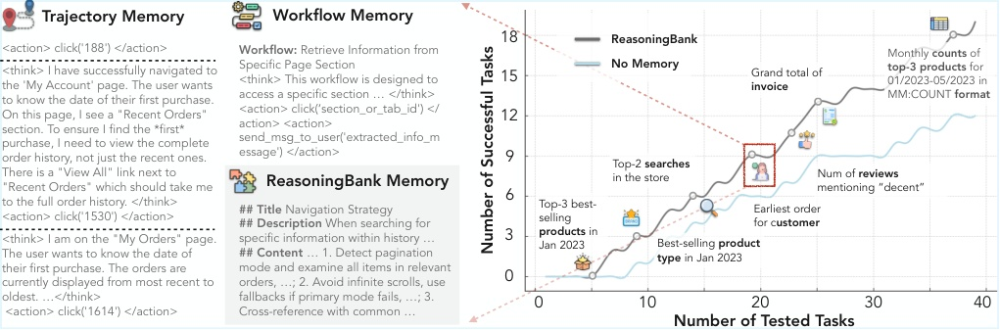
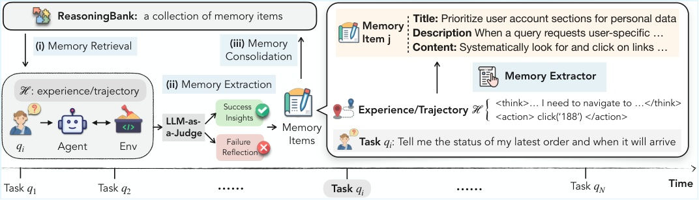
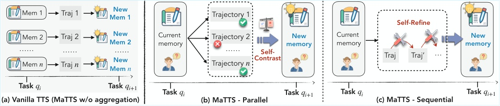
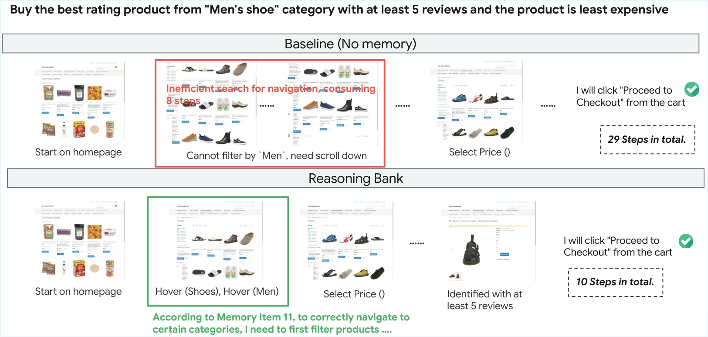
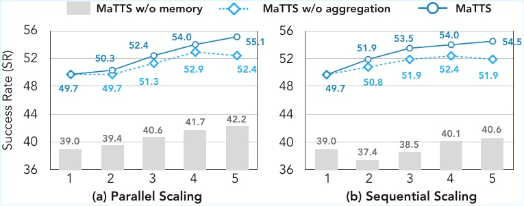
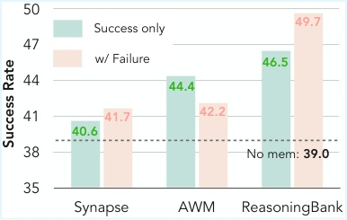
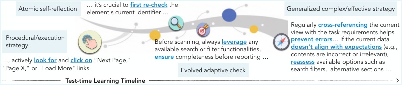

Introduction
흐름: 에이전트가 지속적 역할에 배치됨 → 경험에서 배우지 못하는 근본 한계 → 기존 메모리의 두 가지 결함 → ReasoningBank 제안 → MaTTS로 확장
에이전트는 경험을 쌓지 못한다
LLM 에이전트가 지속적인 역할에 배치될수록, 경험을 축적하지 못한다는 한계가 치명적이 된다.
웹 브라우징, 컴퓨터 사용, 과학적 발견 등 복잡한 실세계 태스크에서 LLM 에이전트는 놀라운 잠재력을 보인다. 문제는 이 에이전트들이 지속적으로 태스크를 처리하는 역할에 배치될 때 드러난다. 태스크가 연속적으로 쏟아지는데도, 에이전트는 매번 새 태스크를 처음 보듯 접근한다.
논문은 이 상황을 세 가지 증상으로 정리한다.
"By approaching each new task in isolation, they are doomed to (i) repeat similar errors observed in the past, (ii) discard valuable insights gained from related problems, and, most importantly, (iii) lack self-evolving capabilities."
기존 메모리는 두 가지 근본 결함을 갖는다
기존 에이전트 메모리 연구는 이미 많다. 하지만 무엇을 저장할지가 아니라 어떤 수준으로 추상화할지에서 모두 실패한다.
기존 접근은 크게 두 갈래다. Raw trajectory 저장 (Synapse 등)은 과거 궤적 전체를 쌓아두고 재사용한다. Workflow 저장 (AWM 등)은 성공 경험에서 절차를 추출한다. 이 둘은 공통된 두 가지 결함을 공유한다.
"First, they lack the ability to distill higher-level, transferable reasoning patterns. Second, by over-emphasizing successful experiences, they leave the valuable lessons from an agent's own failures largely underexplored."
즉 기존 메모리는 passive record-keeping에 머문다. 미래 행동을 실제로 바꿀 수 있는 actionable, generalizable guidance를 제공하지 못한다.
ReasoningBank: 성공과 실패 모두에서 전략을 추출한다
ReasoningBank는 성공과 실패 경험 모두를 재사용 가능한 reasoning strategy로 추상화하고, 이를 closed loop으로 지속 갱신한다.
ReasoningBank는 에이전트 스스로의 판단(ground-truth label 불필요)으로 성공/실패를 구분하고, 양쪽에서 모두 actionable principles를 추출한다. 새 태스크가 오면 관련 메모리를 검색해 행동을 가이드하고, 태스크가 끝나면 새 경험을 분석해 다시 bank에 통합한다. 에이전트는 이 루프를 반복하며 계속 진화한다.

MaTTS: 메모리와 테스트타임 스케일링의 시너지
ReasoningBank 위에서 test-time scaling과 메모리를 양방향으로 증폭시키는 MaTTS를 제안한다.
논문은 여기서 한 걸음 더 나아간다. 태스크를 더 많이 주는 방식(breadth)이 아니라, **단일 태스크에 더 많은 탐색을 투입하는 방식(depth)**으로 경험을 키운다. MaTTS는 이 다양한 탐색에서 나오는 contrastive signal을 활용해 더 강한 메모리를 합성한다. 좋은 메모리는 scaling을 더 효과적으로 만들고, 더 많은 경험은 더 좋은 메모리를 만든다는 선순환이 성립한다.
Methodology
흐름: 문제 설정(streaming test-time learning) → memory schema 정의 → 3단계 closed loop → LLM-as-a-Judge → MaTTS parallel/sequential
문제 설정: 정답 없이 스트리밍으로 배운다
이 논문의 학습 패러다임은 test-time learning이다. 정답 레이블 없이, 태스크가 순서대로 오는 스트리밍 환경에서 에이전트가 스스로 진화해야 한다.
에이전트 정책은 태스크 쿼리를 순서대로 받는다. 핵심 제약은 두 가지다. 미래 태스크를 미리 볼 수 없고, 정답이 주어지지 않는다. 에이전트는 오직 자신의 과거 궤적과 자기 검증만으로 지속적으로 진화해야 한다. 이 설정은 두 가지 핵심 질문을 던진다 — 과거 궤적에서 어떻게 유용한 메모리를 추출할 것인가, 그리고 그 메모리를 어떻게 미래 태스크에 효과적으로 활용할 것인가.
메모리 아이템 스키마: 행동 기록이 아니라 추론 전략
ReasoningBank의 메모리 단위는 trajectory가 아니라 structured reasoning item이다. 저수준 실행 세부사항을 제거하고 전이 가능한 전략만 남긴다.
각 메모리 아이템은 세 필드로 구성된다.
- Title: 핵심 전략을 압축한 식별자
- Description: 한 문장 요약
- Content: 추출된 reasoning steps, decision rationale, operational insight
아래는 "남성화 카테고리에서 리뷰 5개 이상 최저가 제품 구매" 태스크를 성공한 뒤 ReasoningBank가 실제로 추출하는 메모리 아이템 예시다.
Title: Category Navigation via Hover Menu
Description: 특정 하위 카테고리 탐색 시 스크롤 대신 hover 드롭다운 메뉴를 활용해라.
Content: Men's Shoes처럼 특정 하위 카테고리로 이동할 때는 상단 네비게이션에서 Shoes hover → Men hover 순서로 진입할 것. 전체 상품 리스트를 스크롤하는 것보다 탐색 단계를 크게 줄일 수 있다. 카테고리 필터 적용 후 가격·리뷰 정렬을 추가로 적용할 것.
이 메모리 아이템 하나가 있고 없고의 차이가 29 step vs 10 step이다. No Memory 에이전트는 Men 필터를 찾지 못해 전체 리스트를 스크롤하다 헤맸고, ReasoningBank 에이전트는 저장된 "hover 드롭다운" 전략을 바로 꺼내 써서 19 step을 절약했다.
"Memory items in ReasoningBank are designed ... to abstract away low-level execution details while preserving transferrable reasoning patterns and strategies."
이 구조가 중요한 이유는 중간지점을 노리기 때문이다. 너무 짧으면 행동을 실제로 못 바꾸고, 너무 길면 raw trajectory와 다를 바 없다. title+description+content는 사람이 읽어도 이해 가능하면서, LLM system instruction 안에 넣어도 부담이 없는 형태다.
Closed Loop: Retrieval → Extraction → Consolidation
ReasoningBank는 정적 저장소가 아니라, 세 단계가 순환하는 self-improving loop다.
Memory Retrieval: 새 태스크가 오면 쿼리 컨텍스트로 bank를 검색해 top-k 관련 아이템을 임베딩 유사도로 찾는다. 검색된 아이템은 system instruction에 주입돼 에이전트의 행동을 가이드한다.
Memory Extraction: 태스크 완료 후 LLM-as-a-Judge가 ground-truth 없이 쿼리와 궤적만으로 성공/실패를 판정한다. 성공 궤적에서는 validated strategies를, 실패 궤적에서는 counterfactual signals와 pitfalls를 추출한다. 하나의 궤적에서 여러 아이템을 추출한다.
Memory Consolidation: 새로 추출된 아이템들을 bank에 추가한다. 의도적으로 단순한 append 방식을 택했다 — 복잡한 메커니즘 없이 ReasoningBank 자체의 기여를 명확히 보이기 위함이다.

MaTTS: Parallel과 Sequential 두 가지 방식
Vanilla TTS는 trajectory를 독립적으로 bank에 넣어 contrastive signal을 낭비한다. MaTTS는 같은 태스크의 여러 탐색에서 나오는 대조 신호를 메모리 합성에 직접 활용한다.
"This vanilla form is suboptimal because it does not leverage inherent contrastive signal that arises from redundant exploration on the same problem."
Parallel Scaling: 같은 쿼리에서 여러 trajectory를 동시에 생성한다. Self-contrast — 경로 간 비교 — 를 통해 일관되게 성공에 붙는 패턴은 신뢰도 높은 memory item으로 승격하고, 우연한 해법은 걸러낸다.
예를 들어 "Men's Shoes 최저가 구매" 태스크에 trajectory를 5개 생성했다고 하자. 3개는 hover 드롭다운으로 바로 카테고리 진입(성공), 2개는 전체 리스트 스크롤(실패). 이 대조에서 "hover 드롭다운이 핵심 전략"이라는 신호가 강하게 추출된다. trajectory 1개만 봤을 때보다 훨씬 믿을 만한 memory item이 된다.
Sequential Scaling: 단일 trajectory를 반복적으로 재검토한다. Self-refinement 원칙에 따라 에이전트는 완료 후 무엇이 부족했는지 점검하고 다음 단계에서 개선한다. 이때 최종 답뿐 아니라 중간 correction note 자체가 memory signal이 된다.
예를 들어 1차 시도에서 "Recent Orders를 봤더니 날짜가 없었다 → My Orders로 이동해야 했다"는 correction이 발생했다면, 이 수정 메모도 그대로 memory item의 content로 흡수된다. 최종 성공 답변뿐 아니라 "어디서 왜 방향을 바꿨는가"까지 저장된다.

Experiments
흐름: 실험 설정 → WebArena 전체 결과 → 일반화(Multi/Mind2Web/SWE) → MaTTS scaling 효과 → memory×scaling 시너지
실험 설정
세 가지 backbone LLM, 두 개의 web 벤치마크, 하나의 SWE 벤치마크에서 일관되게 검증한다.
에이전트는 Gemini-2.5-flash, Gemini-2.5-pro, Claude-3.7-sonnet 세 가지 모델 위에 구축한다. 평가 벤치마크는 웹 내비게이션의 WebArena (5개 도메인, 684개 태스크), 다양한 웹 환경 일반화를 테스트하는 Mind2Web, 저장소 수준 이슈 해결의 SWE-Bench-Verified다. 비교 기준은 No Memory, raw trajectory 저장(Synapse), workflow 저장(AWM)이다.
ReasoningBank는 baseline을 일관되게 앞선다
단순히 한 설정에서만 잘 되는 게 아니라, 세 backbone 모두에서 성공률과 효율성을 동시에 개선한다.
WebArena에서 Gemini-2.5-pro 기준 결과는 다음과 같다.
| 방법 | Overall SR ↑ | Avg Steps ↓ |
|---|---|---|
| No Memory | 46.7 | 8.8 |
| Synapse | 47.7 | 8.5 |
| AWM | 47.6 | 8.7 |
| ReasoningBank | 53.9 | 7.4 |
| ReasoningBank + MaTTS | 56.3 | 7.1 |
성공률이 +7.2 오르는 동시에 평균 단계도 1.4회 줄어든다. 더 많이 시도해서 맞히는 게 아니라, 더 좋은 reasoning path를 따라가기 때문이다. Gemini-2.5-flash, Claude-3.7-sonnet에서도 같은 패턴이 반복된다.
step 감소가 어떻게 일어나는지는 실제 case를 보면 명확하다.

일반화 설정에서 기존 방법은 무너진다
다른 도메인으로 메모리를 전이해야 하는 설정에서 ReasoningBank의 이점이 오히려 더 크게 나타나고, 기존 방법은 오히려 망가진다.
WebArena의 Multi 서브셋 — 여러 웹사이트 간 전이가 필요한 설정 — 에서 AWM은 기준선보다 성능이 떨어진다. ReasoningBank는 같은 설정에서 baseline 대비 평균 +4.6 SR 향상을 이뤄낸다. Mind2Web의 cross-domain 설정(가장 높은 일반화 요구)에서도 일관된 향상을 보인다. raw trajectory나 절차보다 추상화된 reasoning strategy가 새 도메인에 더 잘 붙는다는 증거다.
SWE-Bench-Verified에서는 Gemini-2.5-pro 기준 resolve rate 54.0 → 57.4, 평균 step 21.1 → 19.8로 줄어든다.
MaTTS: scaling factor가 커질수록 격차가 벌어진다
메모리가 있을 때만 scaling이 일관된 이득을 낸다. 메모리 없이 trajectory만 늘리면 효과가 불안정하다.

Parallel Scaling은 k=1(49.7) → k=5(55.1)로 오른다. Sequential Scaling은 소규모 k에서 빠르게 올라오지만 k=5에서 54.5로 Parallel보다 낮다. Parallel은 k가 클수록 더 다양한 경로 간 contrastive signal이 풍부해져 계속 이득을 낸다. Sequential은 trajectory가 성공이나 실패로 확정되는 순간 추가 refinement에서 얻을 게 줄어든다.
Memory × Scaling 시너지: 양방향 증폭
좋은 메모리가 scaling을 더 효과적으로 만들고, scaling이 만든 경험이 더 좋은 메모리를 만든다. 이 선순환이 이 논문의 핵심 주장이다.
같은 k=5 조건에서 memory mechanism을 바꿔가며 BoN(Best-of-5)과 Pass@1을 비교한다.
"The benefit of scaling depends critically on the underlying memory."
BoN 기준으로 No Memory는 39.0→42.2로 소폭 오르지만, ReasoningBank+MaTTS는 49.7→55.1로 큰 폭 상승한다. Pass@1 — 랜덤으로 고른 trajectory 하나의 품질 — 도 Synapse/AWM은 scaling 시 오히려 떨어지거나 미미하게 오르는 반면, ReasoningBank는 49.7→53.0으로 뚜렷이 오른다. scaling이 만든 다양한 경험을 ReasoningBank만이 제대로 흡수해 메모리 품질을 높일 수 있기 때문이다.
Analysis
흐름: 실패 활용 ablation → emergent strategy case study → LLM-as-a-Judge 노이즈 강건성 → step 감소의 원천 분해
실패를 넣는다고 다 배우는 건 아니다
실패 trajectory를 메모리에 추가했을 때 ReasoningBank만 성능이 크게 오른다. 기존 방법은 효과가 없거나 오히려 떨어진다.

이 결과는 "실패도 중요하다"라는 직관적 주장을 넘어선다. 어떤 방식으로 실패를 소화하느냐가 핵심이다. Synapse와 AWM은 실패를 다루는 별도 메커니즘이 없어서 추가된 실패 trajectory가 그냥 노이즈로 작용한다. ReasoningBank는 실패를 pitfall과 preventive lesson으로 변환하는 추상화 단계 덕분에 오히려 guardrail을 강화한다.
메모리 아이템이 진화한다
ReasoningBank의 메모리는 단순히 쌓이는 게 아니라, 시간이 지나며 저수준 절차에서 고수준 reasoning strategy로 발전한다.

동일한 메모리 아이템이 경험이 쌓이며 더 일반적이고 더 강한 전략으로 발전하는 이 패턴은 강화학습에서 나타나는 emergent behavior의 학습 역학과 유사하다고 논문은 해석한다. 에이전트가 "이 버튼을 눌러라"에서 "현재 뷰와 태스크 요구사항을 교차검증하고 옵션을 재평가하라"로 스스로 추상화 수준을 올린다.
LLM-as-a-Judge가 완벽하지 않아도 시스템은 버틴다
실제 judge 정확도는 72.7%밖에 안 되지만, 70~90% 구간에서 최종 성능 차이가 거의 없다. 완벽한 판정기보다 "대체로 방향이 맞는 평가자"만으로 충분하다.
ground-truth label 없이 에이전트가 스스로 성공/실패를 판단한다는 게 이 논문의 핵심 가정이다. 자연스럽게 "판정이 틀리면 어떻게 되나"라는 의문이 생긴다. 논문은 judge 정확도를 50%~100%로 시뮬레이션해 성능을 측정한다. 결과는 놀랍다 — 70~90% 구간의 성능 차이는 미미하다. 실제 judge(72.7%)는 이 안정 구간에 들어온다. interactive agent 환경에서 정답 레이블을 즉시 얻기 어렵다는 점을 고려하면, 실용적으로 매우 중요한 결과다.
step 감소는 실패를 빨리 포기해서가 아니다
ReasoningBank의 효율성 이득은 실패를 빨리 끝내서가 아니라, 성공 경로를 더 직접적으로 따라가기 때문에 생긴다.
성공/실패 인스턴스를 나눠 step 수를 보면, 성공 케이스에서의 감소폭이 훨씬 크다 — Shopping 도메인 기준 성공 시 평균 2.1 step 감소(26.9% 상대 감소), 실패 시 1.4 감소. 이는 ReasoningBank가 에이전트를 단순히 일찍 포기하게 만드는 게 아니라, 더 좋은 reasoning hint를 따라 더 적은 상호작용으로 문제를 실제로 푼다는 것을 의미한다. 메모리를 heuristic cache가 아니라 policy-shaping 도구로 읽게 만드는 분석이다.